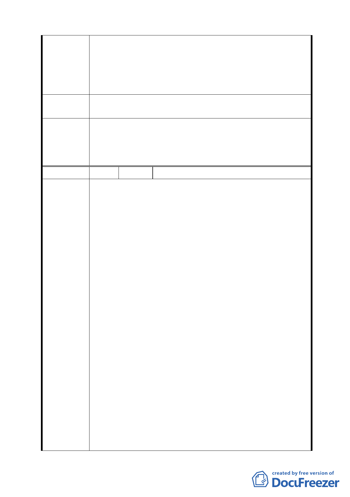

國海德堡目前成為觀光景點，因為追求太陽能環保建設。北投
目前的建築並不如其他地方複雜，易改變其建築外貌。我們要
創造的是無限商機，如只是住宅區、地主的獲利也只是當下的
房地產熱潮。以鄰近環境來看，如要有上百倍增值，我想這仍
須評估，亦需承受如現有需求下的風險及經濟壓力。
建 議 辦 法 期盼在政府有限資源下，說服地主捐地如同金山的社區，加入
改造，創造府民雙贏。
1. 依市府公展案，照案通過。
委員會決議 2. 本計畫區採區段徵收方式開發，無償取得土地興闢公園綠
地、機關用地、道路用地與抽水站用地，並期建構兼具生
態、安全、愉悅且適居的公共空間與示範性生態社區。
編 號 2 陳情人 發展局函轉未具名市長信箱函
奇岩生態社區都市計畫說明會(書面建議書)
＜有關於計畫部分的意見＞
1. 「奇岩新社區」的開闢將造成既有環境的改變，例如社區
之氣候上升、生活交通負擔增加、、、等等。
2. 都市計畫主要計畫與之前社區所理解的計畫內容有所改
變，「國中預定地」為何變為「住宅區」？而不是保留作
為「公共設施」使用？整個變更過程並未與社區進行討論。
3. 新的計畫將綠帶留設磺港溪邊的考量為何？相對的，臨奇
岩里的部分主要配置住宅空間更為密集的社區發展；可否
改變綠帶的配置，部分成為新舊社區的隔離空間，降低新
社區對於舊社區的環境影響。
陳 情 理 由 4. 細部計畫書中並未對於新舊社區交界之街道空間有所規
範。
5. 公共設施的規劃設計應朝向生態社區的設施標準，之前顧
問公司所提出之工程計畫並未落實生態社區的理念。
＜有關於社區生態維護的意見＞
6. 生態承諾；基地的大樹與水圳已經形成的生態體系在計畫
上與在工程施作過程需要維護與監測。作為一個已經成熟
的生態體系不是數量，而是生態效果。報告書中對於社區
所提供的資訊被誤植，需要修正。
7. 基地上的各項資產應落實就地取材的「生態理念」。目前
圍籬工程進行中，基地上原有之石材被大量運出，不符合
生態原則。
7